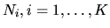

| Schedule of Taiwan Baseball League |
Taiwan baseball league and the sport division of the ministry of education of Taiwan are planning to organize a major event with world baseball championship. After several rounds of discussions among the members of the organizing committee, the details of the game plan are as follows.
Please write a program to produce a schedule for the games. The schedule needs to satisfy the following criteria.
In the testing data, there will be K sets of data.
N1
N2
Nk
K is the number of testing data.
,
are the total number
of teams invited for the competitions. Totally, there are K sets of data to
be tested.
T2
Tk
For each testing case Ni, you must report a schedule of
travellings for the all the teams. The amount of travellings has to be
minimum to be able to be correct. Format your output as shown in the sample
below. In case no teams have to travel between two consecutive days, print
`No teams travelling between day n and day n+1.'
The order in the report has to follow the input order with each testing case. Print a blank line between cases.
1 8
Day 1: Taipei: (1-2) (3-4). Kaohsiung: (5-6) (7-8). No teams travelling between day 1 and day 2. Day 2: Taipei: (1-3) (2-4). Kaohsiung: (5-7) (6-8). No teams travelling between day 2 and day 3. Day 3: Taipei: (1-4) (2-3). Kaohsiung: (5-8) (6-7). Teams travelling between day 3 and day 4: 3,5,4,6. Day 4: Taipei: (1-5) (2-6). Kaohsiung: (3-7) (4-8). No teams travelling between day 4 and day 5. Day 5: Taipei: (1-6) (2-5). Kaohsiung: (3-8) (4-7). Teams travelling between day 5 and day 6: 5,7,6,8. Day 6: Taipei: (1-7) (2-8). Kaohsiung: (3-5) (4-6). No teams travelling between day 6 and day 7. Day 7: Taipei: (1-8) (2-7). Kaohsiung: (3-6) (4-5). Total number of travels: 8